Nei notebook precedenti abbiamo discusso dei sistemi di controllo del movimento utilizzando hardware specifico. Abbiamo accennato all’utilizzo di un motore CC come attuatore, una dinamo tachimetrica CC come sensore di velocità, un potenziometro per il rilevamento della posizione e altro hardware associato. La nostra esplorazione era principalmente radicata nei componenti basati su DC.
Questo notebook si concentra su un diverso set di hardware per avere AC Motion Control Systems.
Confronto tra sistemi CC e CA
Prima di immergerci in profondità, ricordiamo le nostre discussioni precedenti. Nei sistemi di controllo del movimento, abbiamo analizzato due tipologie principali: Sistemi di controllo della posizione e Sistemi di controllo della velocità. Il principio rimane lo stesso, ma l’hardware e talvolta le complessità cambiano quando si passa dai componenti CC a quelli CA.
Componenti del sistema DC:
Attuatore: motore CC
Sensore di velocità: dinamo tachimetrica CC
Sensore di posizione: potenziometro
Componenti del sistema AC:
Attuatore: servomotore bifase
Sensore di velocità e posizione: Synchro (e altri dispositivi di cui parleremo)
Il servomotore bifase
Il nostro primo punto di discussione è il servomotore bifase.
Questo attuatore ha il compito di produrre la coppia necessaria per azionare il carico.
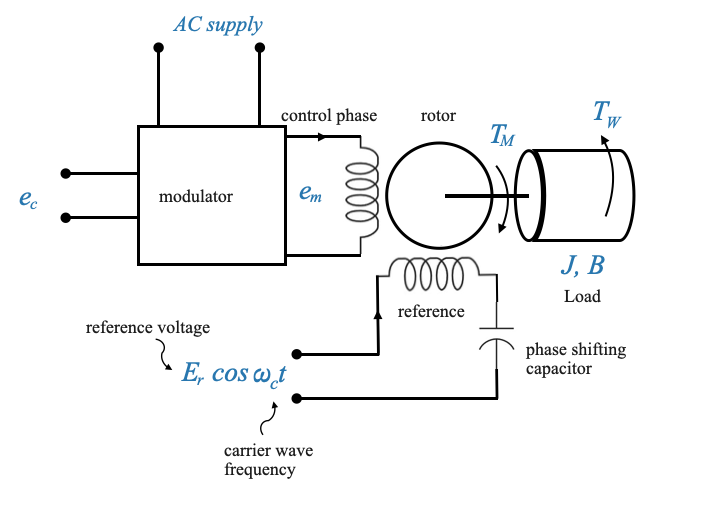
Si chiama ‘bifase’ perché, come evidente dal nome, funziona utilizzando due fasi. Una fase è denominata “fase di controllo” e la sua importanza diventerà presto evidente. L’altra è denominata “fase di riferimento”. Il rotore trasporta il carico, che può essere direttamente sul rotore o tramite un treno di ingranaggi.
Il motivo principale alla base dell’utilizzo di due fasi (o del concetto di “fase divisa”) in alcuni tipi di motori CA è generare un campo magnetico rotante essenziale per il funzionamento del motore. In un motore CA trifase, le tre fasi creano naturalmente un campo magnetico rotante. In un motore CA monofase, il campo magnetico si alterna semplicemente ma non ruota. Per superare questo problema, i motori bifase utilizzano due avvolgimenti, con una differenza di fase, per simulare il campo rotante.
Ruolo delle due fasi: - Coppia di avviamento: uno dei motivi principali per avere due avvolgimenti (o fasi) è produrre una coppia di avviamento. I motori monofase, senza alcun meccanismo di sfasamento, non hanno intrinsecamente una coppia di avviamento, il che significa che non inizieranno a ruotare da soli. - Campo magnetico rotante: introducendo una differenza di fase tra i due avvolgimenti, solitamente attraverso un condensatore o progettando diversamente gli avvolgimenti, si crea uno sfasamento tra le correnti nei due avvolgimenti. Questa differenza di fase si traduce in un campo magnetico rotante essenziale per il funzionamento del motore.
Per semplificazione, rappresentiamo i parametri di carico come “J” e “B”. Il rotore genera una coppia \(T_M\) e affronta una coppia di disturbo \(T_\omega\) che si oppone a \(T_M\).
Data questa configurazione, il successivo componente di interesse è il condensatore di sfasamento** nella fase di riferimento. Il suo ruolo è fondamentale. Garantisce che possiamo derivare un’alimentazione bifase da una sorgente di tensione monofase. Questo condensatore induce una differenza di fase di 90 gradi tra le due fasi.
La fase di riferimento riceve un’alimentazione di tensione del tipo \(E_r\cos\omega_{c}t\), dove \(\omega_{c}\) è denominata frequenza dell’onda portante e \(E_r\)è la tensione di riferimento.
La fase di controllo è collegata ad un Modulatore. L’ingresso al modulatore è la tensione di controllo \(e_c\). Si tratta sempre di una tensione a bassa frequenza in un sistema di controllo.
Commenti
Ricordare che in un sistema di controllo l’obiettivo è rendere zero l’errore. Ad esempio, l’errore potrebbe essere un errore di posizione o di velocità.
Se il sistema di controllo funziona bene, l’errore sarà un segnale a bassa frequenza e un segnale piccolo.
Se consideriamo \(e_c\) come segnale di errore ed entriamo come ingresso per il motore vorrei modulare questo segnale con la frequenza \(\omega_c\), la frequenza portante.
Motori AC e controllo di precisione
Questo notebook si concentra sui motori CA bifase utilizzati in applicazioni di controllo di precisione. In questo contesto, il controllo modulato viene implementato per ottenere una caratteristica prestazionale desiderata, in particolare in sistemi come i servoazionamenti. Abbattiamo i componenti:
1. Tensione di fase di controllo (\(e_c\)):
Questa è essenzialmente la tensione di “ingresso” o di “controllo”. Contiene le informazioni su come vuoi che si comporti il motore. Ad esempio, se vuoi che il motore ruoti ad una certa velocità o si sposti in una certa posizione, questo è codificato in \(e_c\). È il tuo modo di dire al motore cosa fare.
2. Tensione modulata (\(e_m\)):
Questa è la tensione di “uscita”, che viene generata dopo aver modulato la tensione di controllo con un riferimento. La modulazione ha molteplici scopi:
Prestazioni migliorate: Modulando con una portante ad alta frequenza, è possibile migliorare le prestazioni del motore. Ad esempio, la modulazione ad alta frequenza può ridurre le ondulazioni di coppia nel motore.
Immunità al rumore: i segnali ad alta frequenza tendono ad essere meno suscettibili al rumore a bassa frequenza. Ciò è vantaggioso in un ambiente industriale in cui potrebbero essere presenti numerosi disturbi elettrici.
La tensione di fase di controllo (\(e_c\)) codifica il comportamento desiderato del motore. Ciò potrebbe rappresentare la velocità, la coppia o la posizione desiderata. Quando questa tensione di controllo viene combinata (modulata) con la tensione di riferimento ad alta frequenza (\(E_r\)), la tensione modulata risultante (\(e_m\)) viene applicata al secondo avvolgimento (spesso chiamato fase di controllo o modulazione).
3. Tensione di riferimento (\(E_r\)):
\(E_r\) è l’onda portante. Si tratta di un segnale ad alta frequenza che non contiene intrinsecamente alcuna informazione sul controllo del motore. Tuttavia, quando \(e_c\) (il segnale di controllo a bassa frequenza) viene modulato con \(E_r\), il risultato è \(e_m\), che ha proprietà sia del segnale di controllo che dell’onda portante.
Perché la tensione di riferimento è applicata solo alla fase di riferimento?
Applicando la tensione di riferimento a una sola fase (spesso chiamata fase di riferimento), la modulazione è più efficace nel creare un controllo differenziale o relativo tra le fasi. Questo differenziale può essere più efficace nel creare la coppia e la velocità desiderate nel motore.
Un motore CA bifase ha due avvolgimenti, generalmente posizionati a 90 gradi l’uno dall’altro. Le correnti attraverso questi avvolgimenti, quando sono fuori fase, producono campi magnetici che si combinano per formare un campo magnetico rotante risultante. Questo campo rotante è ciò che fa girare il rotore.
L’applicazione della tensione di riferimento, tipicamente un segnale ad alta frequenza, a questa fase stabilisce una linea di base o campo magnetico di “riferimento”.
Applicando la tensione di riferimento solo alla fase di riferimento, la configurazione del motore può creare un campo magnetico differenziale. Questo campo magnetico differenziale, rispetto al riferimento, governa effettivamente il comportamento del motore.
Quando la tensione di riferimento ad alta frequenza viene applicata alla fase di riferimento e la tensione di controllo modulata viene applicata all’altra fase, l’orientamento e l’ampiezza del campo magnetico risultante dipendono dal segnale modulato. Ciò consente un controllo preciso della posizione o della velocità del motore in base alle caratteristiche del segnale modulato.
Se la tensione di riferimento fosse applicata ad entrambe le fasi, non produrrebbe un effetto differenziale e non produrrebbe il controllo di precisione desiderato.
In sostanza, designando un avvolgimento come “riferimento” e l’altro come “controllo”, e quindi applicando tensioni appropriate a ciascuno, il sistema può creare un campo magnetico rotante con direzione e ampiezza controllabili, che è essenziale per un controllo di precisione in applicazioni come i servosistemi.
Ruolo dell’alimentazione CA:
Nonostante tutte queste metodologie di controllo, il motore richiede comunque energia per funzionare. L’alimentazione CA fornisce la potenza necessaria per azionare il motore. Tutte le tensioni sopra menzionate (\(e_c\), \(e_m\), \(E_r\)) riguardano il controllo e la modulazione, ma nessuna di esse fornisce direttamente la potenza necessaria per far girare il motore. È qui che entra in gioco l’alimentazione CA.
In sintesi:
Pensa all’intero processo come analogo a una radio FM. Nella trasmissione FM (modulazione di frequenza), si dispone di un segnale di base ad alta frequenza (simile a \(E_r\)), che viene modulato da un segnale audio a bassa frequenza (simile a \(e_c\)). Il risultato è un segnale modulato ad alta frequenza (come \(e_m\)) che può essere trasmesso. La radio demodula quindi questo segnale per estrarre e riprodurre l’audio. Allo stesso modo, nello scenario di controllo del motore, la modulazione viene utilizzata per combinare le informazioni di controllo con una portante ad alta frequenza per migliorare le prestazioni del motore. La potenza effettiva per far funzionare tutto, tuttavia, proviene dall’alimentazione CA principale.
Modulazione di ampiezza (AM)
In AM, l’ampiezza dell’onda portante ad alta frequenza (\(E_r\)) viene variata in base all’ampiezza istantanea del segnale di controllo (\(e_c\)).
Per modulare la portante utilizzando il segnale di errore, prenderemo il prodotto del segnale di errore e del segnale della portante. Ciò si traduce in un segnale modulato in ampiezza (AM).
L’inviluppo di un segnale modulato in ampiezza (AM) corrisponde all’ampiezza istantanea del segnale, che nel nostro caso è rappresentata dal segnale di errore.
Processo di modulazione:
Onda portante (\(E_r\)):
Si tratta di una forma d’onda sinusoidale ad alta frequenza, che funge da segnale di riferimento. Matematicamente può essere rappresentato come:
Segnale di controllo (\(e_c\)): questo è il segnale che vuoi che il motore segua. Potrebbe rappresentare la velocità, la posizione, ecc. desiderate.
Segnale modulato (\(e_m\)): il risultato del processo di modulazione. Al mattino: \[
e_m(t) = \big[ A_c+e_c(t)\big]\sin(2\pi f_ct)
\]
Circuito di modulazione pratico:
Un circuito comune utilizzato per ottenere la modulazione di ampiezza è il circuito moltiplicatore. Questo circuito moltiplica due segnali di ingresso per produrre un segnale di uscita.
Inserisci \(E_r\) e \(e_c\) nei due input del moltiplicatore
L’uscita \(e_m\) è il prodotto dei due segnali di ingresso
la sua uscita, che contiene componenti di frequenza sia di \(E_r\) che di \(e_c\), viene quindi fatta passare attraverso un filtro passa banda per estrarre, se necessario, il segnale modulato desiderato.
Al giorno d’oggi, con i ricetrasmettitori di comunicazione che sono molto digitalizzati, la modulazione viene eseguita principalmente nel dominio digitale utilizzando un blocco di tipo DSP.
import numpy as npimport matplotlib.pyplot as plt# Time valuest = np.linspace(0, 10, 1000)# Define the error signal (decreasing oscillating signal starting from its maximum)error_signal = (1/ (1+0.2* t)) * np.sin(2* np.pi *.2* t + np.pi/2) # Added phase shift of pi/2# Define the carrier signalomega_c =2* np.pi *5# carrier frequency (for example, 10Hz)carrier_signal = np.cos(omega_c * t)# Modulate the carrier using the error signalmodulated_signal = error_signal * carrier_signal# Plotplt.figure(figsize=(12, 8))# Plot the error signalplt.subplot(3, 1, 1)plt.plot(t, error_signal, label=r'Error Signal $e_c$', color='blue')plt.title(r'Error Signal $e_c$')plt.xlabel('Time')plt.ylabel('Amplitude')plt.grid(True)plt.legend()# Draw x=0 and y=0 axesplt.axvline(0, color='black', linewidth=2, linestyle='-')plt.axhline(0, color='black', linewidth=2, linestyle='-')# Plot the carrier signalplt.subplot(3, 1, 2)plt.plot(t, carrier_signal, label='Carrier Signal: cos(ωc t)', color='green')plt.title('Carrier Signal')plt.xlabel('Time')plt.ylabel('Amplitude')plt.grid(True)plt.legend()# Draw x=0 and y=0 axesplt.axvline(0, color='black', linewidth=2, linestyle='-')plt.axhline(0, color='black', linewidth=2, linestyle='-')# Plot the modulated signalplt.subplot(3, 1, 3)plt.plot(t, modulated_signal, label='Modulated Signal', color='red')plt.title(r'Amplitude Modulated Signal $e_m$')plt.xlabel('Time')plt.ylabel('Amplitude')plt.grid(True)plt.legend()# Draw x=0 and y=0 axesplt.axvline(0, color='black', linewidth=2, linestyle='-')plt.axhline(0, color='black', linewidth=2, linestyle='-')# Plot the positive envelope (absolute value of the error signal)plt.plot(t, np.abs(error_signal), '--', label='Positive Envelope', color='blue', linewidth=1.5)# Plot the negative envelope (negative of the absolute value of the error signal)plt.plot(t, -np.abs(error_signal), '--', label='Negative Envelope', color='green', linewidth=1.5)plt.tight_layout()plt.show()
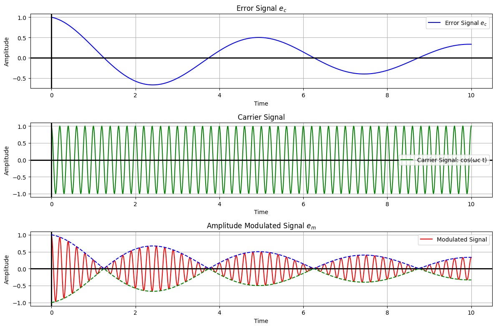
Si noti che quando cambia il segno di \(e_c\), la fase del segnale modulato \(e_m\) si inverte (il massimo di \(e_c\) è il minimo di \(e_m\)).
A causa di questa inversione di fase si verifica il flusso magnetico e si inverte anche la direzione del motore. Questo è un controllo bidirezionale:
quando \(e_c>0\) il motore si muove in una direzione
quando \(e_c<0\) il motore si muove nella direzione opposta
\(e_m\) è un’onda modulata con portante alla frequenza \(\omega_c\)
la tensione di riferimento \(e_c\) è alla frequenza \(\omega_c\)
Insomma: Queste due tensioni applicate alle due fasi del motore produrranno una coppia sul motore. La coppia sarà una funzione di \(e_c\) (\(e_r\) è una tensione fissa) e la sua direzione sarà una funzione del segno di \(e_c\).
Caratteristiche coppia-velocità del motore CA
Una vista comparativa con il motore DC mostra che mentre quest’ultimo presenta caratteristiche di coppia-velocità quasi lineari, la curva del motore AC è evidentemente non lineare.
La curva coppia-velocità di un tipico motore DC shunt è relativamente semplice rispetto a un motore AC. La coppia dipende in modo più o meno lineare dalla corrente di armatura e, all’aumentare della velocità, la coppia generalmente diminuisce in modo lineare a causa della forza elettromotrice (FEM) del motore che si oppone alla tensione di alimentazione.
Le caratteristiche lineari dei motori DC sono un vantaggio perché il modello è più semplice.
Se facessimo un esperimento queste sono le curve tipiche che otterremmo:
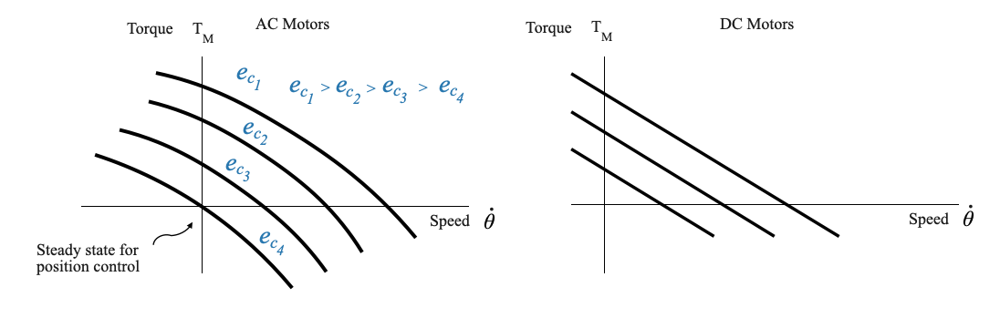
Una volta determinate sperimentalmente le curve coppia-velocità per i motori, i dati risultanti possono aprire la strada alla formulazione di modelli matematici precisi.
Una caratteristica così non lineare dei motori CA può rappresentare una sfida, soprattutto se desideriamo farli funzionare su un’ampia gamma. Ma uno degli aspetti positivi dei motori CA è il loro comportamento quasi lineare attorno alla velocità zero, che li rende adatti ai sistemi di controllo della posizione.
A regime, la velocità è zero e la posizione del carico è uguale alla posizione comandata: il motore non si muove. Intorno a questo punto si ha un comportamento lineare che possiamo utilizzare e modellare.
Per questo motivo ci concentreremo solo sui modelli lineari dei motori AC, assumendo che il punto di funzionamento sia velocità = 0.
Equazione della coppia lineare per motori CA
Dato che per il nostro problema di controllo della posizione possiamo assumere che il punto operativo sia \(\text{speed}=0\), l’equazione della coppia è una funzione della tensione di controllo \(e_c\) e della velocità $ $:
\[
T_M = K_1e_c-K_2\dot{\theta}
\]
Dove: - \(K_2\) è il fattore determinante per mettere in relazione coppia e velocità ed è la pendenza dell’approssimazione lineare delle curve Coppia-Velocità nel grafico dei motori CA sopra (quando la velocità \(\approx\) 0). - La tensione di controllo \(e_c\) è fondamentale perché fa sì che si sposti da una curva all’altra (nel diagramma sopra \(e_{c_1}>e_{c_2}>e_{c_3}\)) - Quando la tensione di controllo aumenta, la coppia aumenta - Quando la velocità aumenta, la coppia diminuisce
Una volta determinate sperimentalmente le curve, possiamo ottenere i parametri corrispondenti per il nostro modello lineare.
Dalle curve Coppia-Velocità nel grafico dei Motori AC sopra possiamo dedurre direttamente la costante \(K_2\)
Per ottenere \(K_1\), è possibile tracciare il grafico della tensione di fase di controllo \(e_c\) rispetto alla coppia \(T_m\) (vedere il grafico sotto). La pendenza della linea risultante in condizioni di velocità costante (diciamo \(\omega = 0\)), fornirà il valore per \(K_1\). Questo approccio presuppone un modello di linearità per un dispositivo, che vale per determinati intervalli di funzionamento.
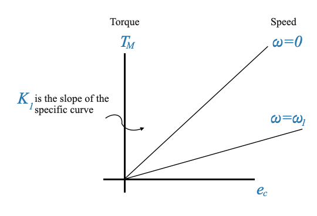
Equazione del motore CA
Siamo ora pronti a scrivere il modello matematico del motore AC:
dove ora abbiamo aggiunto il carico e: - \(T_M\) è la Coppia sviluppata dal motore - \(e_c\) è la tensione della fase di controllo - \(\dot{\theta}\) è la velocità del motore - \(K_1\) e \(K_2\) sono costanti determinate sperimentalmente - \(J \ddot{\theta}\) è il carico inerziale - \(B\dot{\theta}\) è lo smorzamento - \(T_W\) è la coppia di disturbo sul sistema.
Possiamo riscrivere l’equazione di cui sopra come:
L’intero discorso può essere rappresentato visivamente utilizzando un diagramma a blocchi, evidenziando le relazioni tra \(e_c\), \(\theta\), \(\omega\) e altri parametri di sistema.
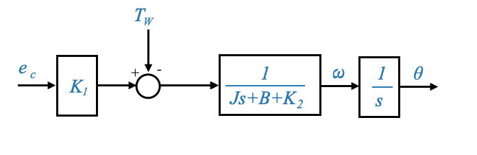
Attraverso lo schema a blocchi che rappresenta il sistema, è possibile ricavare una funzione di trasferimento, che collega \(e_c\) (ingresso) e \(\omega\) o \(\theta\) (uscita).
Funzione di trasferimento tra \(\omega\) e \(e_c\):
\[
\frac{\omega}{e_c} = \frac{K_1}{Js+B+K_2}
\]
Tieni presente che \(K_2\) aumenta lo smorzamento meccanico del sistema, ricordando il comportamento del motore controllato dall’armatura CC.
\(K_2\) aggiunge direttamente allo smorzamento, influenzando la stabilità e la risposta del sistema. Inoltre la costante di tempo del sistema diventa \[
\tau = \frac{J}{B+K_2}
\]
indicando che \(K_2\) influenza la velocità con cui il sistema risponde ai cambiamenti.
🤔 Domanda popup: In che modo l’entità di \(K_2\) influisce sullo smorzamento e sulla costante di tempo del sistema?
Risposta: \(K_2\) aumenta direttamente lo smorzamento, influenzando la stabilità e la risposta del sistema. Inoltre, la costante di tempo del sistema diventa \(\tau = \frac{J}{B+K_2}\) indicando che \(K_2\) influenza la velocità con cui il sistema risponde ai cambiamenti.
Barra laterale: un tipico motore a induzione
Le caratteristiche della velocità di coppia di un normale motore a induzione sono riportate nel grafico sottostante.
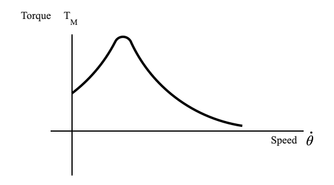
Possiamo utilizzare questo motore a induzione bifase per applicazioni servo?
Per rispondere a questa domanda consideriamo la funzione di trasferimento
\[
\frac{\omega}{e_c} = \frac{K_1}{Js+B+K_2}
\]
dove \(K_2\) aumenta lo smorzamento.
Se \(K_2\) è negativo, a seconda della sua relazione con \(B\) (ricorda che entra in \(B+K_2\)), potrebbe portare a instabilità.
Una curva caratteristica, soprattutto quella che presenta una pendenza negativa, può introdurre uno smorzamento negativo, portando a oscillazioni eccessive e possibilmente culminando in instabilità o oscillazioni eccessive (oscillazioni) nel sistema. \(B\) dovrebbe essere estremamente alto per contrastare gli effetti di un \(K_2\) negativo.
Per questo motivo, un normale motore a induzione non viene mai utilizzato per applicazioni servo (sistemi controllati in posizione o velocità).
🤔 Domanda popup: Perché un normale motore a induzione potrebbe non essere adatto per applicazioni servo?
Risposta: Un normale motore a induzione potrebbe presentare caratteristiche in cui la pendenza diventa negativa, introducendo la possibilità di smorzamento negativo, che potrebbe portare a instabilità o oscillazioni eccessive nel sistema, soprattutto nel contesto di applicazioni servo dove è importante un controllo preciso .
Ricordiamo che le caratteristiche coppia-velocità dei servomotori AC da noi utilizzati sono riportate nella figura sotto (a sinistra):
Queste caratteristiche hanno \(K_2\) sempre positivo.
Ottenimento di caratteristiche di coppia-velocità con pendenza positiva
Queste caratteristiche sono ottenute direttamente dal motore a induzione, in particolare utilizzando un’elevata resistenza del rotore.
Una maggiore resistenza del rotore garantisce che le caratteristiche di risposta del motore rimangano positive.
In sostanza, un servomotore è un motore a induzione con elevata resistenza del rotore. Una tale scelta progettuale garantisce che le caratteristiche del servomotore presentino sempre una pendenza positiva. Tuttavia, questa scelta comporta dei compromessi:
L’elevata resistenza del rotore significa che l’efficienza complessiva del sistema sarà ridotta.
Nonostante la riduzione dell’efficienza, il design è essenziale per applicazioni specifiche come i servosistemi in cui una pendenza negativa potrebbe essere dannosa.
— FINE DELLA BARRA LATERALE
Ritorniamo al modello del motore
Diamo un’occhiata alla rappresentazione matematica del motore:
Il modello motorio è dato da:
\[
\frac{\omega}{e_c} = \frac{K_m}{\tau_m s + 1}
\]
Dove: - \(\omega\) è la velocità del motore - \(e_c\) rappresenta la tensione di controllo - \(K_m\) è il guadagno del motore - \(\tau_m\) è la costante di tempo meccanica del motore.
Questo è un sistema del primo ordine tra velocità e tensione di controllo.
🤔 Domanda popup: Perché l’equazione tra \(\theta\) (posizione) e la tensione di controllo è un sistema del secondo ordine?
Risposta: L’equazione per \(\theta\) incorpora un ulteriore fattore ‘s’ dovuto alla relazione integrale tra velocità e posizione.
Il modello motorio compreso tra \(e_c\) e \(\theta\) è dato da:
\[
\frac{\theta}{e_c} = \frac{K_m}{s\big(\tau_m s + 1\big)}
\]
E questo è lo stesso del motore DC controllato da armatura (che è un modello di secondo ordine).
Comprendere la tensione di fase di controllo
\(e_c\) o la tensione di fase di controllo è tipicamente un segnale a bassa frequenza.
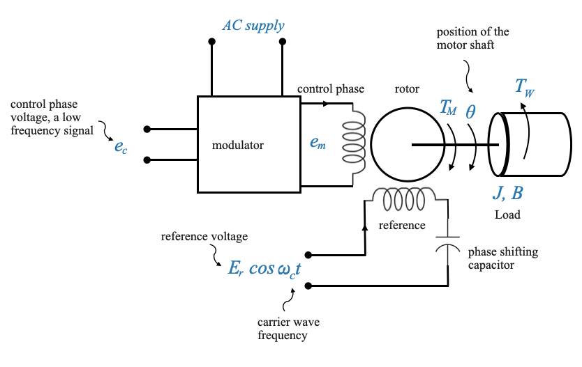
Considerare la situazione in cui la tensione di fase di controllo potrebbe essere direttamente un segnale modulato ad alta frequenza.
In questo caso l’input è \(e_m\) e l’output è \(\theta\). Vediamo qual è la funzione di trasferimento tra di loro.
Barra laterale: comprensione dell’ingresso del motore CA: segnale modulato dalla portante
Per comprendere l’input al motore consideriamo un sistema di feedback:
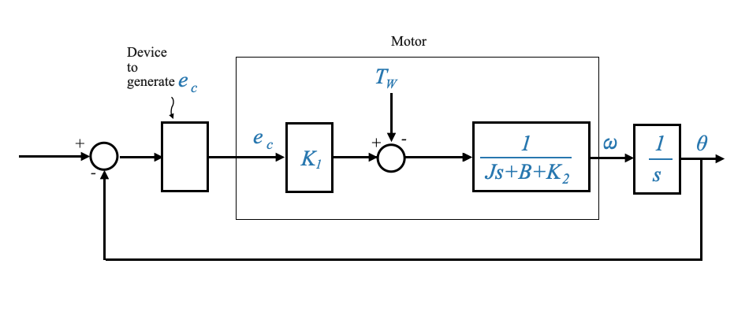
L’ingresso al motore è la tensione di fase di controllo \(e_c\). Ciò tuttavia dipende dal dispositivo (ad esempio un amplificatore) tra la giunzione sommatrice e il motore.
La tensione di fase di controllo \(e_c\) dipende dal ‘Dispositivo’. Questo dispositivo potrebbe produrre un segnale a bassa frequenza esattamente come abbiamo discusso finora.
Supponiamo invece che questo dispositivo produca un Segnale Modulato a Portante e questo sia il segnale utilizzato come tensione di fase di controllo \(e_c\)
Se il segnale in ingresso è quello riportato di seguito (segnale modulato in ampiezza):
L’effettiva informazione di controllo è incorporata nell’inviluppo del segnale modulato.
La frequenza portante (come 50 Hz, 400 Hz, 1000 Hz) è principalmente un aspetto operativo e dipende dalla progettazione del motore. È la frequenza operativa del motore. Dipende da cosa ci ha fornito il produttore.
La frequenza operativa (la frequenza portante) può essere selezionata ad esempio in base alla frequenza del rumore. Se sappiamo che il motore funzionerà in un ambiente in cui sono presenti disturbi a bassa frequenza, dovrei scegliere una frequenza portante alta. In ambienti come i sistemi aeronautici, c’è abbondante rumore a bassa frequenza. L’uso di un motore ad alta frequenza come 1000 Hz aiuta a ridurre l’impatto di questo rumore. Per le applicazioni a terra in genere utilizziamo una frequenza più bassa. Dipende dall’applicazione.
In questo caso il modello matematico del sistema può essere assunto come il rapporto tra la velocità (\(\omega\)) o la posizione (\(\theta\)) - uscita - e l’inviluppo del segnale modulato della portante - ingresso -.
In sintesi:
se il segnale di ingresso è direttamente un segnale a bassa frequenza e viene inviato al motore CA tramite un modulatore, quel segnale a bassa frequenza verrà preso come ingresso per il motore
se il segnale di ingresso al motore è un segnale modulato con portante, allora il nostro ingresso dal punto di vista del controllo è l’inviluppo del segnale modulato. Questo è ciò che trasporta l’informazione, ad esempio rappresenta la differenza tra la posizione comandata e la posizione effettiva.
Collegamento al modello matematico
Per ribadire, il modello matematico che utilizziamo, \(\frac{\omega}{e_c} = \frac{K_m}{\tau_m s+ 1}\), si concentra sulla relazione tra la velocità del motore (\(\omega\)) e l’informazione- che trasporta il segnale \(e_c\). La frequenza del segnale portante non è di primaria importanza per le nostre applicazioni di controllo.
import numpy as npimport matplotlib.pyplot as plt# Time valuest = np.linspace(0, 10, 1000)# Define the error signal (decreasing oscillating signal starting from its maximum)error_signal = (1/ (1+0.2* t)) * np.sin(2* np.pi *.2* t + np.pi/2) # Added phase shift of pi/2# Define the carrier signalomega_c =2* np.pi *5# carrier frequency (for example, 10Hz)carrier_signal = np.cos(omega_c * t)# Modulate the carrier using the error signalmodulated_signal = error_signal * carrier_signal# Plotplt.figure(figsize=(6, 3))# Plot the modulated signalplt.subplot(1, 1, 1)plt.plot(t, modulated_signal, label='Modulated Signal', color='red')plt.title(r'Amplitude Modulated Signal $e_m$')plt.xlabel('Time')plt.ylabel('Amplitude')plt.grid(True)plt.legend()# Draw x=0 and y=0 axesplt.axvline(0, color='black', linewidth=2, linestyle='-')plt.axhline(0, color='black', linewidth=2, linestyle='-')# Plot the positive envelope (absolute value of the error signal)plt.plot(t, np.abs(error_signal), '--', label='Positive Envelope', color='blue', linewidth=1.5)# Plot the negative envelope (negative of the absolute value of the error signal)plt.plot(t, -np.abs(error_signal), '--', label='Negative Envelope', color='green', linewidth=1.5)plt.tight_layout()plt.show()
Segnale modulato della portante (CMS) - ulteriori commenti
Il concetto di segnale modulato con portante (CMS) emerge spesso nel contesto dei sistemi di comunicazione e controllo, in particolare quando dobbiamo trasmettere o utilizzare un segnale che, di per sé, non è adatto alla trasmissione diretta o all’applicazione a causa di alcune limitazioni.
Segnale modulato della portante (CMS): in sostanza, la modulazione comporta la modifica di alcuni aspetti di un’onda portante a frequenza più alta in proporzione al segnale del messaggio a frequenza più bassa che si desidera inviare. L’onda portante, da sola, non trasporta alcuna informazione utile. Sono le modifiche apportate ad esso (modulazione) dal segnale del messaggio che trasmette l’informazione desiderata.
Perché modulare?: Consideriamo un’analogia. Immagina di voler mandare una barchetta di carta attraverso un grande stagno. Se lo metti semplicemente nell’acqua, potrebbe non andare lontano. Ma se lo posizioni sopra una barca a motore più grande (il trasportatore), può viaggiare efficacemente attraverso lo stagno. In questa analogia, la barchetta di carta è come il segnale a bassa frequenza e la barca più grande è il segnale portante.
Segnale a bassa frequenza rispetto a CMS: in molte applicazioni pratiche, i segnali a bassa frequenza sono difficili da trasmettere, applicare o rilevare per diversi motivi: - Potrebbero non indurre efficacemente una risposta in alcuni sistemi. - Potrebbero essere più suscettibili alle interferenze o al rumore. Modulando un segnale portante con il segnale a bassa frequenza, possiamo superare queste limitazioni.
Relazione con i motori: se parli dell’utilizzo del CMS nel contesto del controllo motorio, il concetto può essere visto come simile alla modulazione di larghezza di impulso (PWM). Con PWM, una portante ad alta frequenza (un’onda quadra) viene modulata in modo tale che il suo ciclo di lavoro (la proporzione del tempo in cui è “acceso” rispetto a “spento”) rappresenta il segnale di controllo desiderato, spesso per controllare la velocità o la posizione del motore .
Per i motori, ciò presenta vantaggi: - Permette un controllo più efficiente e rapido. - La natura ad alta frequenza della portante garantisce un trasferimento efficiente di energia e può ridurre l’usura dei componenti del motore. - La potenza effettiva applicata al motore può essere controllata con precisione semplicemente variando il ciclo di lavoro.
Rilevatore di errori CA e trasmettitori-trasformatori sincroni per sistemi di controllo della posizione
Un componente chiave necessario per comprendere ed eseguire i sistemi di controllo della posizione è il rilevatore di errori CA. Nel discorso presentato, il rilevatore di errore CA viene spiegato attraverso l’introduzione di due dispositivi: il trasmettitore sincronizzato e il trasformatore di controllo sincronizzato.
Trasmettitore sincronizzato
Il trasmettitore è un dispositivo che trasmette un segnale elettrico corrispondente all’angolo di rotazione del suo albero.
Dall’esterno, un trasmettitore (o ricevitore) sincronizzato assomiglia molto a un normale piccolo motore
Un trasmettitore sincronizzato è un trasmettitore CA. È costruito con un rotore a forma di manubrio, attraverso il quale viene fornita una tensione CA tramite anelli collettori. Lo statore ha tre avvolgimenti, mostrati schematicamente come S1, S2 e S3.
I tre avvolgimenti, con distribuzione spaziale di 120 gradi, permettono di codificare la posizione del rotore in modo rappresentabile attraverso tre diverse tensioni. Non stai cambiando la tensione CA, cambi la posizione del rotore. Quando si modifica la posizione del rotore, le tre tensioni sui tre terminali cambiano di conseguenza.
La tensione CA (una tensione fissa) fornita al rotore produce un flusso magnetico che, quando collegato agli avvolgimenti dello statore, induce una forza elettromotrice ai terminali 1, 2 e 3. Le tensioni a questi terminali trasportano l’informazione della posizione del rotore , rappresentato come theta (\(\theta\)).
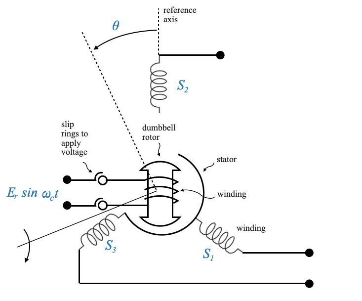
Rispetto allo schema sopra, prendendo \(S_2\) come asse di riferimento: - Quando \(\theta=0\), il flusso massimo (cioè la tensione massima) è su \(S_2\) con valore: $ e_{S_2n} = KE_r(_c t) $, dove \(K\) è una costante che regola l’ampiezza secondo necessità. - Quando \(\theta=0\), il flusso (cioè la tensione) su \(S_2\) vale: \(0\)
In generale, la relazione matematica tra la posizione del rotore (\(\theta\)) e la tensione (rispetto al neutro \(n\)) può essere espressa come:
quando \(\theta=0\), \(e_{S_3S_1} =0\) e il rotore è nella sua posizione null (posizione di riferimento del rotore).
quando il rotore è nella posizione nulla, la tensione massima è sull’avvolgimento \(S_2\) e la tensione tra \(S_3\) e \(S_1\), \(e_{S_3S_1} =0\)
Si noti inoltre che cambia solo l’ampiezza delle tensioni. Questo è un dispositivo monofase. Le tre tensioni sono in fase.
Un trasmettitore sincronizzato ha come ingresso la rotazione del suo albero (\(\theta\)) e come uscita le tre tensioni
Trasformatore di controllo sincronizzato
Nell’ambito del sistema di controllo della posizione, un altro dispositivo essenziale è il trasformatore di controllo del sincronismo. Questo dispositivo condivide molte somiglianze con il trasmettitore sincronizzato, ad eccezione della costruzione del rotore. Il rotore in questo trasformatore è più cilindrico. Questa costruzione garantisce un’impedenza costante vista da un dispositivo di condizionamento del segnale allegato, garantendo che questa impedenza rimanga inalterata dalla posizione del rotore.
Se il rotore non è cilindrico, l’impedenza vista dal dispositivo di condizionamento del segnale è funzione della posizione del rotore.
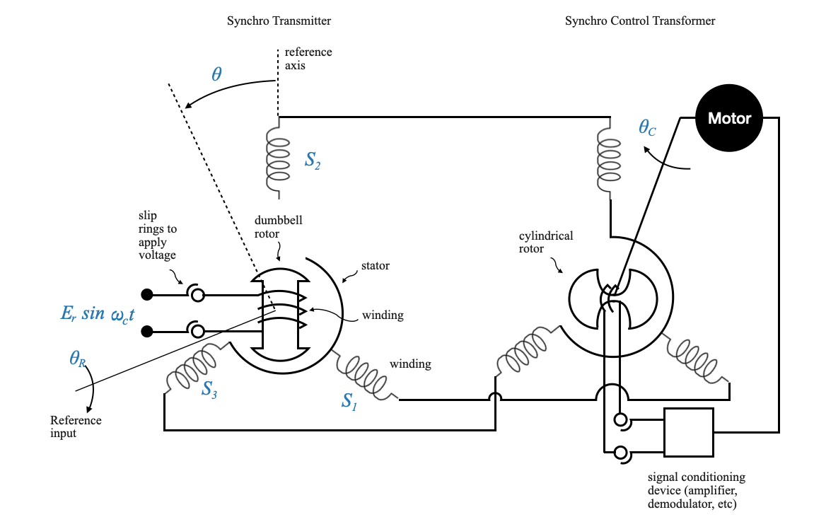
Si noti che nulla vieta di utilizzare un rotore cilindrico anche nel trasmettitore Synchro sopra descritto. Tuttavia in quel caso non era un requisito e l’utilizzo di un rotore con bilanciere probabilmente è meno costoso.
Il dispositivo di condizionamento del segnale elabora l’uscita dal trasformatore di controllo sincronizzato e aziona un motore. Questo motore controlla la posizione del rotore nel trasformatore di controllo sincronizzato. I due avvolgimenti dello statore del trasmettitore sincronizzato e del trasformatore di controllo sincronizzato sono interconnessi, con la posizione del rotore di uno che rappresenta il riferimento e l’altro la posizione controllata.
Nel trasformatore di controllo, l’uscita del dispositivo di condizionamento del segnale va a un motore che controlla la posizione del rotore cilindrico.
L’ingresso per l’intero sistema, composto sia da un trasmettitore che da un trasformatore, è la differenza dei movimenti dei due alberi \(\theta_R\) e \(\theta_C\), e l’uscita è il segnale all’ingresso del condizionatore , che è proporzionale alla differenza delle due posizioni dell’albero.
Richiamo della coppia di potenziometri
Potresti ricordare la nostra discussione su una coppia di potenziometri. Illustrare:
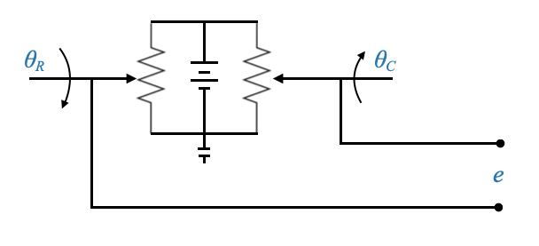
Dal nostro studio, il segnale \(e\) può essere rappresentato come:
\[
e = K_p\big(\theta_R - \theta_C\big)
\]
qui \(K_p\) è una costante potenziometrica e l’espressione enfatizza la differenza tra le due posizioni dell’albero.
Meccanica della coppia sincronizzata
La coppia sincronizzata funziona in modo simile, ma gestisce specificamente la corrente alternata e si concentra sui segnali ad alta frequenza.
Continuiamo a fare riferimento alla nostra coppia Synchro:
\(\theta_R\) indica la posizione di riferimento.
\(\theta_C\) simboleggia la posizione controllata.
Il nostro obiettivo finale è sfruttare questo dispositivo come rilevatore di errori, ottenendo un segnale che rappresenti la differenza (o errore) tra \(\theta_R\) e \(\theta_C\).
Se disponiamo di questo, abbiamo in effetti tutto ciò di cui abbiamo bisogno per completare il nostro ciclo di feedback del controllo della posizione, dove \(\theta_R\) è l’input e \(\theta_C\) è l’output che vogliamo controllare.
Trasmettitore sincronizzato funzionante
Considerando il trasmettitore sincronizzato, immagina il seguente schema di flusso:
Il trasmettitore sincronizzato invia uno schema di flusso specifico in base alla sua posizione. Il trasformatore di controllo sincronizzato riceve uno schema di flusso simile. L’angolo tra il trasmettitore sincronizzato e il trasformatore di controllo sincronizzato è rappresentato dagli angoli θ (per il trasmettitore) e α (per il trasformatore di controllo).
Dato che la forza elettromagnetica indotta a causa di questo modello di flusso è diretta al trasformatore di controllo del sincronismo, possiamo concludere che il modello di flusso in quest’ultimo sarà identico.
Con una determinata posizione del rotore del trasformatore di controllo del sincronismo, la tensione indotta nel suo rotore può essere rappresentata come \(e\).
🤔 Domanda pop-up: Qual è la tensione indotta nel rotore del trasformatore di controllo quando il trasmettitore sincronizzato è in posizione nulla?
Risposta: La tensione indotta è zero. Quando il trasmettitore sincronizzato è nella sua posizione nulla o zero, il modello di flusso si allinea in modo tale che non venga indotta alcuna tensione nell’avvolgimento del rotore del trasformatore di controllo sincronizzato.
Induzione di tensione al cambio di posizione
Se il trasmettitore sincronizzato ruota di \(\theta\) e il rotore del trasmettitore di controllo ruota di \(\alpha\), l’angolo netto tra il trasmettitore e l’asse del trasformatore di controllo è \(90-\theta-\alpha\).
In questo caso la tensione indotta \(e_m\) è data da:
Qui, quando la differenza angolare tra \(\theta\) e \(\alpha\) è di 90 gradi, chiamiamo lo stato operativo della coppia sincronizzata come “posizione zero elettrico”. In questa posizione la tensione indotta nell’avvolgimento del rotore sarà zero.
E questo è ciò di cui abbiamo parlato anche prima (vedi equazioni 1-6).
In altre parole:
Se il rotore del trasmettitore sincronizzato ruota di un angolo \(\theta\) e il rotore del trasformatore di controllo sincronizzato ruota di un angolo \(\alpha\), l’angolo netto tra gli assi del trasmettitore e il trasformatore di controllo è dato da $90−+$. La tensione \(e_m\) indotta nel trasformatore di controllo in queste condizioni è:
Da questa rappresentazione risulta evidente che la tensione indotta \(e_m\) è funzione della differenza degli angoli \(\theta\) e \(\alpha\).
Per sistemi di controllo del feedback
Nel contesto di un sistema di controllo feedback, la differenza tra gli angoli \(\theta\) e \(\alpha\) rappresenta l’errore \(\phi\).
Non appena \(\theta - \alpha = \phi\) è diverso da zero, un buon sistema di controllo proverà a riportarlo a zero. Questo perché un buon sistema di controllo cercherà di minimizzare questo errore.
Nel contesto di un sistema di controllo feedback, la differenza tra gli angoli \(\theta\) e \(\alpha\) sarà piccola (designata come \(\phi\)). Questo perché un buon sistema di controllo cercherà di minimizzare questo errore.
Quando questa differenza è piccola, \(\sin(\theta-\alpha) \approx \phi\) e l’espressione per \(e_m\) possono essere approssimati come:
\[
e_m = K^{'}E_R\phi(t)\sin(\omega_c t)
\]
Ciò semplifica la complessa relazione sinusoidale non lineare trasformandola in lineare, soprattutto se si considera il dispositivo come un rilevatore di errori in un meccanismo di feedback.
Nota che questa è un’approssimazione che vale solo se \(\phi\) è piccolo. In un sistema di controllo che cerca attivamente di ridurre \(\phi\) questo è un presupposto ragionevole. Quando la coppia sincrona non fa parte di un sistema di controllo feedback e \(\phi\) può assumere qualsiasi valore, questa ipotesi non è più valida.
Derivazione della funzione di trasferimento
Ora rivolgiamo la nostra attenzione alla configurazione input-output del dispositivo.
Dato il modello:
\[
e_m = K^{'}E_R\phi(t)\sin(\omega_c t)
\]
L’input per il dispositivo è \(\phi(t)\), che rappresenta l’errore tra le posizioni dell’albero di riferimento e l’albero di feedback o controllato.
L’uscita è \(e_m\), disponibile sui terminali del rotore del trasformatore di controllo.
Tuttavia, derivare una funzione di trasferimento per questo sistema è più complicato. La relazione tra \(e_m\) e \(\phi\) include un termine \(\sin(\omega_c t)\), rendendo complessa la rappresentazione matematica (notare che si tratta di un’operazione di modulazione).
Come abbiamo discusso in precedenza, qui \(\omega_c\) indica la frequenza operativa del dispositivo, che potrebbe essere valori come 50 Hz, 400 Hz o 1000 Hz. Poiché si tratta della frequenza operativa, non fornisce intrinsecamente informazioni sull’errore del sistema.
che sarà del formato (uscita del rilevatore di errore di sincronizzazione):
L’errore \(\phi(t)\) è dato da \(e_c(t)\), che è l’inviluppo del segnale sopra. Il corriere non contiene alcuna informazione sull’azione di controllo. Se presente solo perché il dispositivo funziona alla frequenza \(\omega_c\).
Questa realizzazione implica che per un modello matematico dovremmo preoccuparci principalmente dell’inviluppo \(e_c\) e non dell’intero output modulato \(e_m\). Pertanto, il modello diventa più semplice, trattando \(\phi\) come input e \(e_c\) come output.
E ora possiamo scrivere la funzione di trasferimento del Synchro Error Detector come:
\[
\frac{E_c(s)}{\phi} = K_s
\]
Questa costante \(K_s\), nota come sensibilità del rilevatore di errore di sincronizzazione, svolge un ruolo fondamentale nella comprensione del flusso di informazioni nel sistema. Questa costante non dipende dalla frequenza portante.
Questa sensibilità, simile alla costante potenziometrica \(K_P\) nella coppia di potenziometri, rimane costante indipendentemente dalla frequenza portante.
Per ribadire, mentre la frequenza portante, \(\omega_c\), è essenziale per il funzionamento del dispositivo, la nostra attenzione analitica è più sull’inviluppo di errore \(e_c\) piuttosto che sul segnale modulato \(e_m\). Questa distinzione deriva dalla natura dei sistemi di controllo: è l’errore, non la frequenza portante, a fornire informazioni preziose sulle prestazioni del sistema.
Rappresentazione simbolica del rilevatore di errore di sincronizzazione
Dopo aver compreso il movimento rotatorio del rilevatore di errore di sincronizzazione, possiamo esplorare ulteriormente un dispositivo lineare che dimostra un’azione simile. Questo dispositivo, chiamato Trasformatore differenziale variabile lineare (LVDT), fornisce un segnale di uscita proporzionale al movimento lineare.
IMMAGINE
Il funzionamento dell’LVDT è intuitivo. Quando il nucleo è posizionato centralmente, la tensione netta è zero a causa dell’eguale collegamento delle linee di flusso ad entrambe le bobine secondarie (gli avvolgimenti secondari sono in opposizione di fase). Lo spostamento del nucleo in una direzione collega più linee di flusso a una bobina, risultando in una tensione di una polarità specifica. Il movimento opposto inverte la polarità. La polarità e l’ampiezza della tensione indicano rispettivamente la direzione e l’entità dello spostamento del nucleo.
polarità: ti dà la direzione
magnitudine: fornisce l’entità dello spostamento
Proprio come il dispositivo sincronizzato fornisce un output relativo al movimento angolare, l’LVDT fornisce un output basato sul movimento lineare. La relazione può essere rappresentata come:
\[
e_m = KE_ry(t)\sin(\omega_c t)
\]
\(e_m\) è l’uscita che è un segnale modulato.
Analogamente alla discussione precedente, ci concentriamo sulla busta \(e\), che è
\[e=KE_ry(t)=K_sy(t)\]
che è la parte che trasporta le informazioni, per costruire il nostro modello matematico (\(K_s\) è la sensibilità del dispositivo).
Tachimetrica
Prendiamoci un momento per osservare da vicino la dinamo tachimetrica. La dinamo tachimetrica è un dispositivo che traduce la velocità di rotazione in un segnale elettrico, comunemente utilizzato per il feedback nei sistemi di controllo del motore.
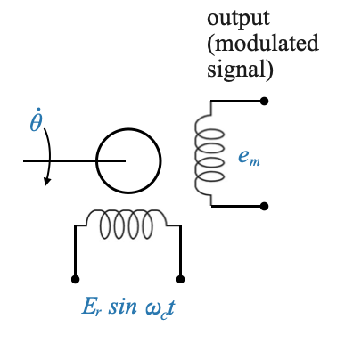
L’ingresso per la dinamo tachimetrica è indicato come \(\dot{\theta}\).
La dinamo tachimetrica ha un avvolgimento di riferimento e accetta come ingresso \(E_r\sin(\omega_c t)\).
L’uscita è un segnale modulato, rappresentato come \(e_m\) e dipende dalla frequenza \(\omega_c\) (la portante) e \(\dot{\theta}\) (l’ingresso meccanico al rotore). L’espressione completa per \(e_m\) è:
\[
e_m = KE_r\omega(t)\sin(\omega_c t)
\]
Questo segnale modulato contrasta con l’uscita di una dinamo tachimetrica CC, che era un segnale diretto a bassa frequenza proporzionale alla velocità. L’uscita della dinamo tachimetrica CC era direttamente proporzionale alla velocità, l’uscita era un segnale CC. Tuttavia, la modellazione matematica fornisce una rappresentazione simile per entrambi.
La dinamo tachimetrica DC produce un segnale diretto a bassa frequenza proporzionale alla velocità, mentre la dinamo tachimetrica AC produce un segnale modulato.
Il segnale di errore, \(e\), è rappresentato come:
\[
e= K_t \omega(t)
\]
(simile al motore DC).
Qui è essenziale capire che l’informazione del segnale viene trasportata dall’inviluppo, non dalla portante. Pertanto, si presume che la demodulazione estragga questo inviluppo.
Revisione del controllo motore
Siamo ora pronti per rivisitare il controllo del motore CA.
Il motore bifase ha un avvolgimento di riferimento e un condensatore di sfasamento. Questo condensatore aiuta a ottenere lo sfasamento desiderato per il controllo.
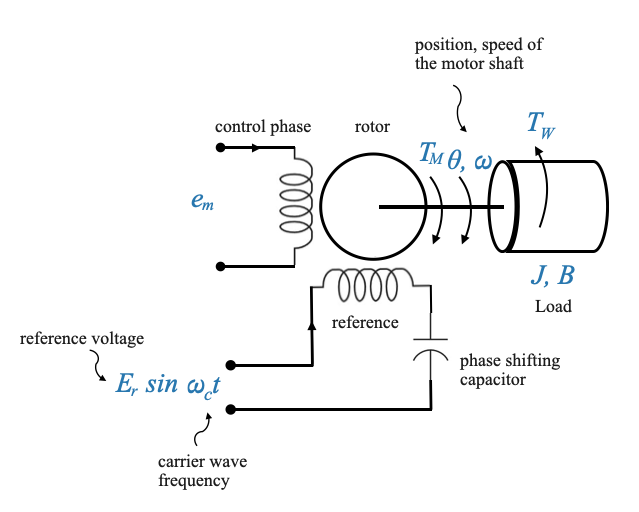
L’ingresso del motore arriva direttamente o tramite un modulatore ed è essenziale riconoscere che non è necessario alcun modulatore se un rilevatore di errore di sincronismo alimenta la tensione di fase di controllo. Questo perché il rilevatore di errore di sincronizzazione fornisce direttamente un segnale modulato.
Allo stesso tempo, anche se abbiamo un ingresso modulato \(e_m\) il modello matematico considererà solo l’inviluppo di quel segnale perché quella è la parte di informazione.
🤔 Domanda popup: Perché potrebbe non essere necessario un modulatore con un rilevatore di errore di sincronizzazione?
Risposta: Perché il rilevatore di errore di sincronizzazione emette direttamente un segnale modulato adatto al motore.
Modellazione matematica del motore
L’equazione coppia-velocità per il motore è rappresentata come:
Dove - \(T_M\) è la coppia del motore - \(e_c\) è l’inviluppo dell’ingresso alla tensione di fase di controllo - \(K_1\) e \(K_2\) sono costanti
Possiamo rappresentare il modello precedente come il seguente diagramma a blocchi in cui esplicitiamo la coppia \(T_M\) generata dal motore.
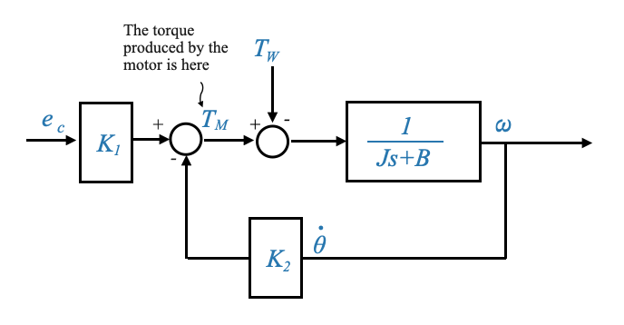
Si noti che il motore ha un circuito di feedback intrinseco, identico alla situazione che abbiamo avuto con i motori controllati dall’armatura.
Se vogliamo avere \(\theta\):
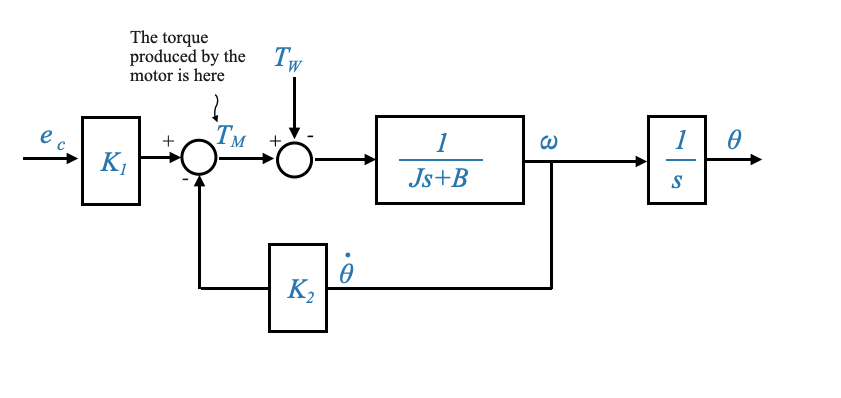
Questo è il diagramma che viene solitamente utilizzato quando un motore CA viene utilizzato nei controlli di feedback.
Applicazione nel mondo reale: controllo di un teleobiettivo
Abbiamo assemblato il nostro toolkit e acquisito una solida conoscenza dei suoi componenti. Ora è il momento di avventurarci in uno scenario pratico.
Il problema del controllo
Consideriamo una situazione in cui abbiamo un teleobiettivo pesante. L’obiettivo è controllare con precisione la posizione di questa telecamera. Per raggiungere questo obiettivo, utilizzeremo un motore CA. Per garantire un movimento fluido e preciso, prenderemo in considerazione anche altri dispositivi e meccanismi per aiutare il motore.
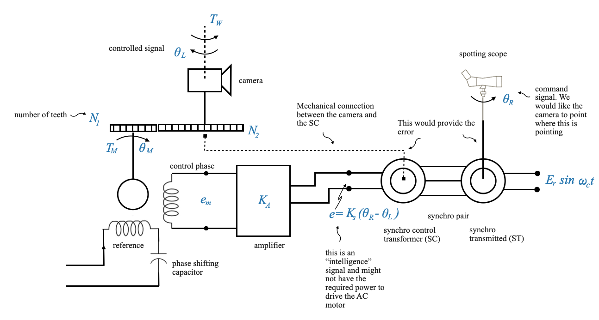
Il sistema ha i seguenti componenti:
Un treno di ingranaggi per l’ingrandimento della coppia e la riduzione della velocità. Gli ingranaggi primario e secondario hanno rispettivamente i denti \(N_1\) e \(N_2\).
Un disturbo, \(T_W\), che agisce sul sistema.
Un motore CA che genera una coppia etichettata come \(T_M\) e ha una posizione di \(\theta_M\). Il motore ha due avvolgimenti, un avvolgimento di riferimento con il condensatore di sfasamento e un avvolgimento di fase di controllo che ha il segnale modulato \(e_m\). Il segnale modulato dovrebbe essere proporzionale all’errore tra la posizione comandata e la posizione effettiva \(\theta_L\).
Un cannocchiale che fornisce un segnale di comando \(\theta_R\).
L’errore \(\theta_R - \theta_L\) dovrebbe riflettersi attraverso la tensione \(e_m\). Ciò si ottiene utilizzando una coppia sincro, comprendente un trasmettitore sincro e un trasformatore di controllo sincro. Il controllo di sincronizzazione è collegato meccanicamente alla fotocamera per leggere la posizione della fotocamera \(\theta_L\). Il trasmettitore sincronizzato è collegato a un cannocchiale che fornisce l’ingresso di riferimento \(\theta_R\).
🤔 Domanda popup: Come diamo il comando? Risposta: Il telescopio fornisce il segnale di riferimento. Un rilevatore di errore di sincronizzazione che misura la differenza tra la posizione comandata e quella effettiva.
🤔 Domanda popup: Perché è necessario un treno di ingranaggi nel sistema? Risposta: è necessario un treno di ingranaggi per aumentare la coppia perché il motore da solo non può produrre la coppia sostanziale necessaria per ruotare il pesante teleobiettivo.
Comprendere la coppia sincronizzata
La coppia sincronizzata, composta da un trasmettitore e un trasformatore di controllo, è fondamentale. Il trasmettitore viene influenzato da \(\theta_R\) e il rotore del trasformatore di controllo da \(\theta_L\). Ciò crea un segnale modulato, che è essenzialmente un mix di una frequenza portante costante e un’ampiezza che dipende dall’errore tra \(\theta_R\) e \(\theta_L\).
Ruolo dell’amplificatore
Poiché il segnale modulato potrebbe non avere potenza sufficiente per azionare il motore CA, viene introdotto un amplificatore. Migliora la forza del segnale, garantendo che il motore funzioni in modo efficace.
Segnali
Come detto, i segnali in questo caso non necessitano di modulazione o demodulazione. Questo perché sono intrinsecamente compatibili con i dispositivi con cui interagiscono. L’equazione \(\theta_R - \theta_L\) coinvolge segnali CC e l’uscita del controllo sincronizzato è un segnale modulato che può essere utilizzato per azionare il motore.
Il dispositivo sincronizzato funge infatti da modulatore. Accetta un segnale DC (\(\theta_R - \theta_C\)) ed emette un segnale modulato con frequenza \(\omega_c\). Questo segnale viene quindi amplificato da un amplificatore CA per produrre un altro segnale modulato.
Si noti che la frequenza di riferimento per questi due dispositivi (sincro e motore) deve essere \(\omega_c\) per compatibilità.
Motore AC come demodulatore
Il ruolo del motore CA può essere paragonato a un demodulatore poiché elabora il segnale modulato per produrre una coppia \(T_M\) e una posizione (\(\theta_M\)), entrambi segnali CC. Ciò implica che il dispositivo sincronizzato (modulatore) e il motore CA (demodulatore) funzionano in modo armonioso, garantendo che l’ingresso e l’uscita dell’intero sistema rimangano segnali CC.
Modello matematico e diagramma a blocchi
Sulla base delle discussioni precedenti, per ricavare un modello matematico, rimuoviamo la frequenza portante.
Per fare ciò, inizieremo con uno schema a blocchi e poi lo ridurremo ad una opportuna funzione di trasferimento.
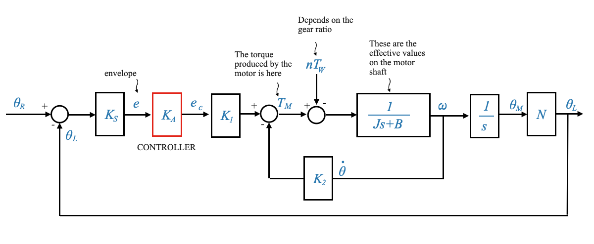
In particolare, \(\theta R\) viene confrontato con \(\theta_L\) per produrre un segnale di errore. Il segnale risultante subisce varie trasformazioni che coinvolgono costanti come \(K_s\), \(K_A\) e \(K_1\). E infine possiamo includere segnali di disturbo e meccanismi di feedback:
Il disturbo \(T_W\) agisce indirettamente sul motore attraverso un riduttore, provocando un disturbo riflesso di \(nT_W\). Allo stesso modo, parametri come \(J_L\) e \(B_L\) del teleobiettivo, quando riflessi sull’albero del motore, si trasformano in valori equivalenti \(J\) e \(B\).
L’obiettivo principale di questo sistema di controllo è che \(\theta_L\) (posizione del teleobiettivo) imiti perfettamente \(\theta_R\) (posizione del telescopio). È auspicabile che non vi siano transitori in questo movimento e l’errore in stato stazionario dovrebbe essere minimo o pari a zero. Questo delinea il problema di progettazione del controllo.
Progettazione del controllo
Si noti che questo diagramma a blocchi include un controller sotto forma di controller proporzionale. Questo è l’amplificatore puro \(K_A\). In futuro potrebbe essere sostituito con un controller più avanzato che potrebbe impiegare azioni di controllo proporzionali, integrali, derivate o anche altre azioni avanzate che terranno conto delle specifiche prestazionali desiderate.
Utilizzo di un motore CC
Consideriamo un sistema di controllo del feedback in cui vogliamo guidare un carico specifico. Possiamo immaginare questo carico come un componente che deve essere azionato da un’entità esterna, ad esempio un motore.
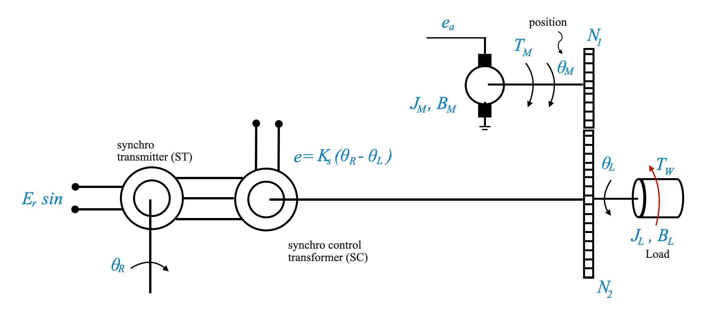
I parametri forniti per questo carico sono:
Momento d’inerzia: \(J_L\)
Coefficiente di smorzamento: \(B_L\)
Coppia di disturbo: \(T_W\)
Posizione: \(\theta_L\)
🤔 Domanda popup: Qual è il significato di ciascuno di questi parametri nel determinare il comportamento del carico?
Risposta: Il momento d’inerzia (\(J_L\)) ci dà un’idea della resistenza del carico alle variazioni di movimento. Il coefficiente di smorzamento (\(B_L\)) è una misura della forza resistente quando il carico è in movimento. La coppia di disturbo (\(T_W\)) è una forza esterna che influenza il carico. La posizione (\(\theta_L\)) ci dice lo stato attuale o la posizione del carico.
Ci sono stati dati due vincoli per il nostro sistema di controllo: - Dobbiamo utilizzare un motore CC e non un motore CA come attuatore. Il motivo è che i motori CC presentano caratteristiche di coppia-velocità lineari e possono gestire una coppia maggiore per una determinata dimensione rispetto a un motore CA. - Invece di un rilevatore di errore potenziometrico, utilizzeremo un rilevatore di errore sincro. Il rilevatore di errore di sincronismo è preferito per la sua migliore risoluzione, linearità, robustezza e assenza di problemi di contatto comunemente riscontrati nei rilevatori di errore potenziometrici.
Dobbiamo determinare come interfacciare il segnale di uscita del trasformatore di controllo sincronizzato con l’armatura del motore CC, dopo l’amplificazione.
Vogliamo utilizzare il motore DC come attuatore e la coppia sincronizzata come rilevatore di errori.
Assumiamo inoltre che il nostro titolare del trattamento sia un titolare del trattamento PD
Nello schema seguente, come colleghiamo insieme i componenti?
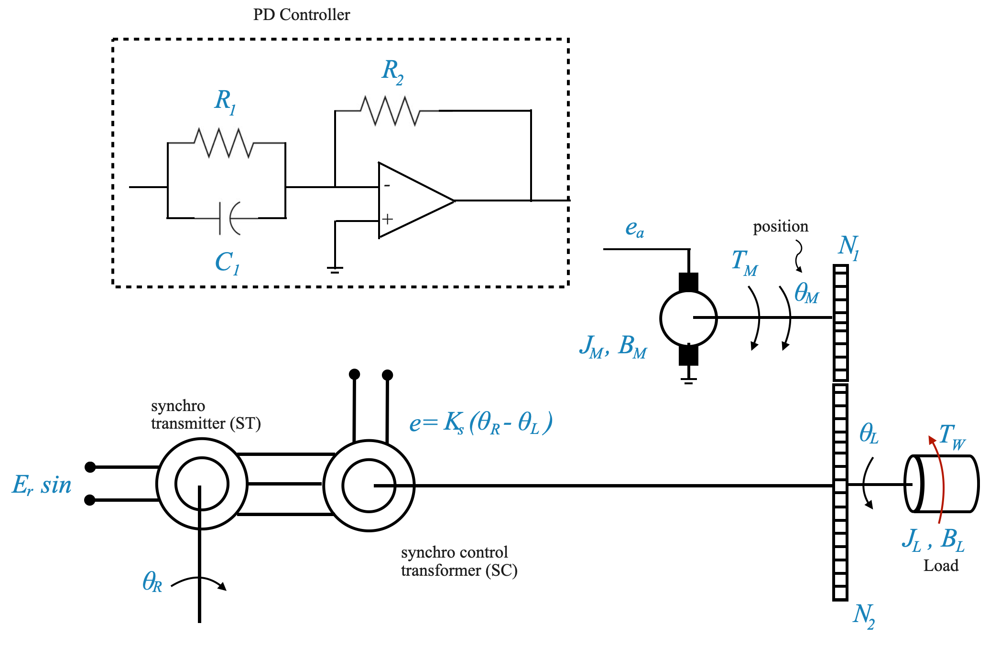
Collegamento della coppia sincrona al motore CC:
Per interfacciare la coppia sincrona al motore DC:
Estrarre l’inviluppo dell’uscita del trasformatore di controllo del sincronismo utilizzando un demodulatore. Questo è fondamentale perché siamo interessati al segnale informativo sull’errore e non al segnale portante.
Alimentare la busta estratta ad un circuito PD (Proporzionale Derivativo). Questo circuito produrrà un’uscita proporzionale sia all’errore che alla sua derivata.
Nota: l’azione PD dovrebbe agire solo sulle informazioni relative all’errore. Dovremmo evitare di prendere la derivata del segnale portante. Vogliamo solo prendere la derivata dell’inviluppo.
Si noti inoltre che, se non avessimo utilizzato un controller PD, avremmo potuto utilizzare direttamente un amplificatore CA e un raddrizzatore per ottenere direttamente un segnale CC. Ciò tuttavia funzionerebbe solo se non fosse richiesta un’azione derivativa. Se invece è richiesta una derivata, allora la derivata deve essere presa sul segnale informativo.
Amplificare l’uscita del circuito PD utilizzando un amplificatore con amplificazione \(K_A\).
Collegare il segnale amplificato all’ingresso della tensione di armatura \(e_a\) del motore CC, che guiderà quindi il carico attraverso il treno di ingranaggi.
Ricollegare l’albero di uscita del motore al trasformatore di controllo sincronizzato per chiudere il circuito di feedback.
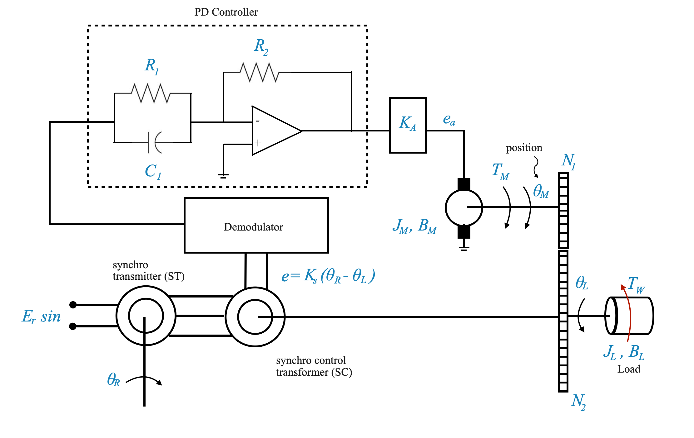
🤔 Domanda popup: Perché è necessario estrarre l’inviluppo dell’uscita del trasformatore di controllo sincronizzato?
Risposta: La busta contiene le informazioni sull’errore, fondamentali per il feedback. Estraendo l’inviluppo, eliminiamo i componenti non necessari del segnale portante e ci concentriamo solo sul segnale informativo desiderato.
Considerazioni importanti:
Amplificatore invertente: quando si deriva la funzione di trasferimento per il controller PD Op-Amp, noterai l’introduzione di un segno negativo. Per risolvere questo problema, utilizzare un amplificatore invertente. Ciò garantirà che la funzione di trasferimento rimanga positiva.
Funzione di trasferimento del demodulatore: Idealmente, la funzione di trasferimento del demodulatore (che estrae l’inviluppo dal segnale modulato) è l’unità (l’ingresso è l’inviluppo e l’uscita è l’inviluppo).
Diagramma a blocchi
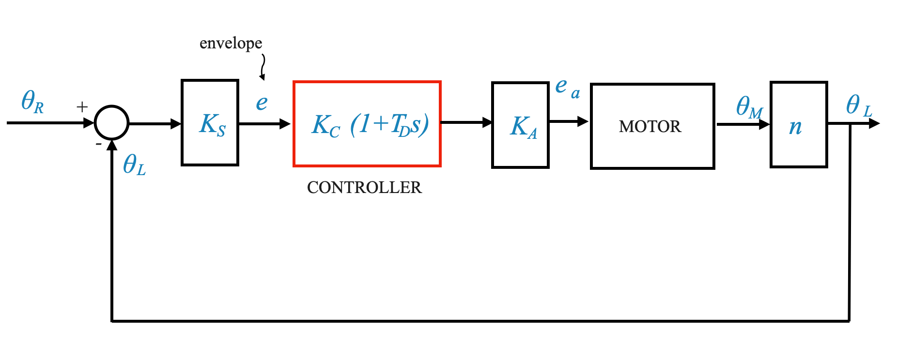
Ed ecco se esplicitiamo lo schema a blocchi del motore DC: